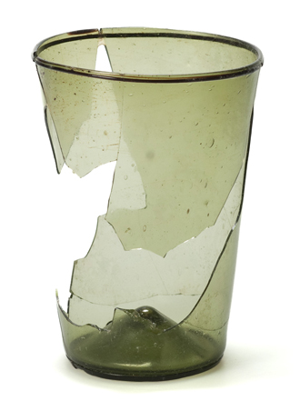

Dedo von Kerssenbrock-Krosigk
Head, Glasmuseum Hentrich, Museum Kunstpalast, Düsseldorf
RSVP is required.
To reserve your place, please visit our web site, email academicevents@bgc.bard.edu, or call 212.501.3019.
All events take place in the Lecture Hall at 38 West 86th Street, Bard Graduate Center.
Please note that our Lecture Hall can only accommodate a limited number of people, so please come early to assure yourself a seat.

|
Do people ever think about glass? This talk suggests that they do; that glass is a meaningful material. For example, what was the impact of the first glass imitation of lapis lazuli when it was brought before the Mesopotamian king, or the Egyptian pharaoh? Did the ancient Greeks pay any attention to glass? Was the invention of blown glass in the Roman era nothing more than an achievement of technical efficiency? Did glass play a role in medieval religion and science (alchemy)? These and many other questions will not be answered to anyone’s complete satisfaction. Instead, it is hoped that a survey of the plethora of viewpoints from which glass has been considered throughout its history will give a fresh idea of the richness of the material, and of the subtlety with which it has been approached in the past.
Dedo von Kerssenbrock-Krosigk is head of the Glasmuseum Hentrich, Museum Kunstpalast, in Düsseldorf, Germany. He received his PhD in Art History from Humboldt University in Berlin in 1997. After working at the Bröhan-Museum in Berlin, he worked from 2004 to 2008 as curator of European glass at The Corning Museum of Glass in Corning, New York. He curated the show Glass of the Alchemists in Corning in 2008 and initiated and co-curated the show Art and Alchemy—The Mystery of Transformation in Düsseldorf in 2014.
|
|